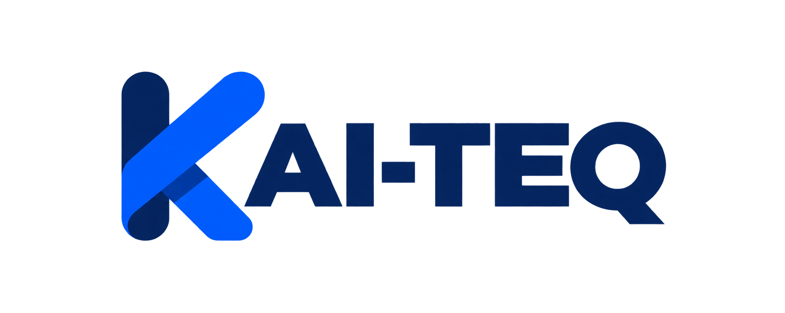

Option 1 · Dotted square
Most connected to the original KAI-TEQ identity. The dark container makes the fine dotted K clearer and gives it more authority.
Brand comparison
Switch between the marks below. Everything else stays identical so you can judge clarity, confidence and how naturally each logo belongs on the website.

People + Technology + Progress
KAI-TEQ turns the everyday work slowing your business down into simpler systems that save time, serve customers better and create room to grow.
Most connected to the original KAI-TEQ identity. The dark container makes the fine dotted K clearer and gives it more authority.
Cleanest and friendliest at small sizes. It feels simple and approachable, although it is less distinctive on its own.
Boldest and most ownable. It communicates connection and movement, but has a stronger technology feel than the other two.